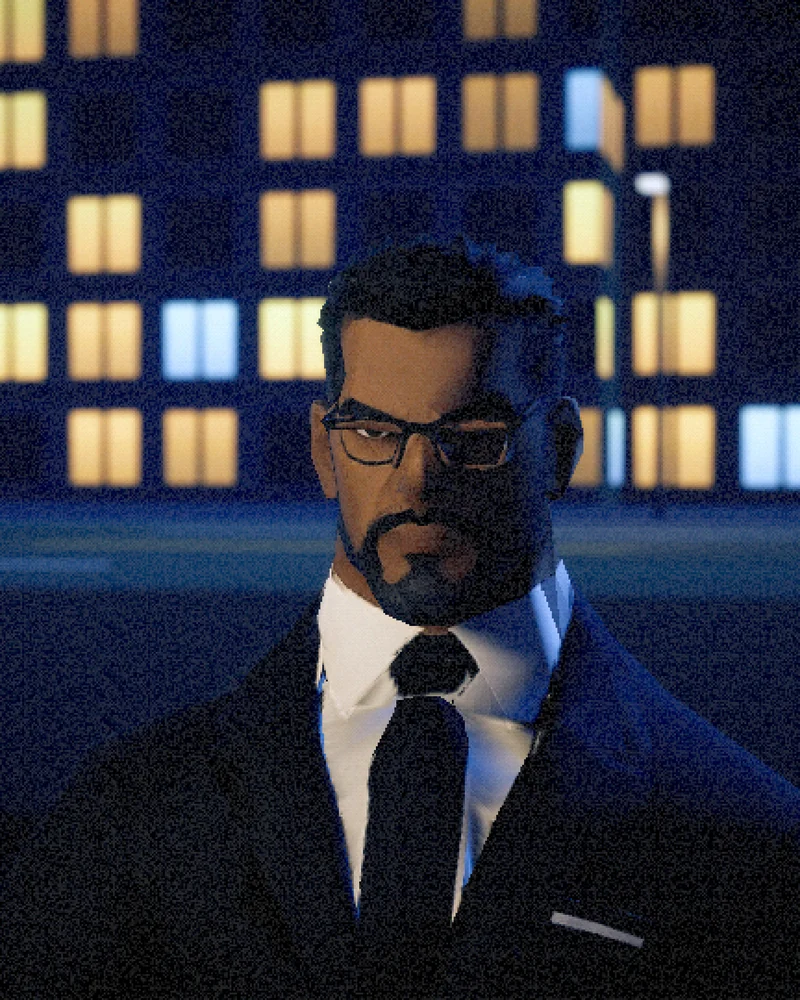
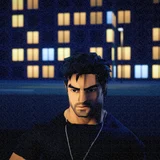

NOVO
Detetive Elias 2A Ordem da Pedra
Em 3D, em primeira e terceira pessoa. Dois capítulos, doze missões, cutscenes, tiroteios, perseguições, finalizações brutais — e escolhas que pesam.
- 3D
- Campanha
- Multijogador online
- Conquistas
O detetive volta em 3D, com campanha completa e multijogador online. E, junto, o remake do jogo onde tudo começou.
Baixe o Detetive Elias Launcher e escolha o que instalar — como na Steam ou na Epic. Conquistas, tempo de jogo e tudo mais, sem conta e sem pagar nada.
Em 3D, em primeira e terceira pessoa. Dois capítulos, doze missões, cutscenes, tiroteios, perseguições, finalizações brutais — e escolhas que pesam.
O primeiro caso, refeito do zero: mundo aberto em pixel art, cinco capítulos, capangas, figurinhas, fliperama e a verdade escondida nas sombras de Araraquara City.
Primeira e terceira pessoa, parkour, carrinho, dash e pulo duplo.
O inimigo piscou? Aperte E. Facada, chute mortal — e o famigerado pulão.
Vermelho × Azul, de 1v1 a 4v4, em rodadas estilo CS/Valorant. Sala com código, sem servidor.
Roleta de skins de armas, melhorias por XP e power-ups que custam nível.
Bonecos escondidos pelas missões e troféus para a estante.
Dezenas delas, com platina — e o launcher mostra o seu progresso.

Terno, suspensórios, tatuagens e uma voz que nunca sobe. Sempre tem uma proposta pronta — e ninguém sabe muito bem de que lado ele está.

LucasO brincalhão do trio. Cobre a retaguarda — e as piadas.Sem spoiler: só o suficiente para dar vontade.
Dez minutos no relógio e uma escolha que ninguém quer fazer.
Rodovia, noite, trânsito pesado e o pé embaixo.
Elias, Davi e Lucas soltos na cidade.
A noite da Vila Armonia tem dono. Entre em silêncio.
Um caminhão, uma bazuca e uma moto emprestada.
Charadas e referências espalhadas pelos dois jogos. Pense antes de abrir o envelope.
Um jogador cria a sala no menu Coop. Na primeira vez o Windows pergunta se libera o jogo no firewall: Permitir.
O jogo abre a porta no roteador sozinho (UPnP) e monta um código com o IP da internet e o IPv6. É só copiar e mandar.
Os amigos colam o código em Entrar na sala. Mesma casa ou outra cidade.
Roteador sem UPnP ou internet com CGNAT? O jogo avisa — aí uma VPN grátis (Radmin VPN, ZeroTier) resolve, e o mesmo código funciona.
Windows 10/11 64 bits · 8 GB de RAM · placa de vídeo com DirectX 11 (GTX 960 / RX 470 ou melhor) · ~3 GB livres
Windows 10/11 64 bits · 4 GB de RAM · qualquer placa de vídeo recente · ~3 GB livres
Windows 10/11 64 bits · internet só para baixar os jogos